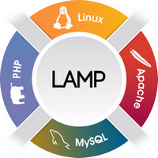

Le Volume Horaire
Ce module est enseigné grâce à 10 Cours Magistraux de 1h30 chacun, ce qui
nous fait un total de 15h de Cours Magistraux dans le semestre. De plus, des Travaux
Dirigés de 3h ont lieu par semaine. Etant donné qu'il y en a 12 dans le semestre, nous totalisons
36h de Travaux Dirigés.
L'Objectif
L'objectif de ce module est de maîtriser les bases du développement Web en environnement
Open-Source LAMP (Linux / Apache / PHP).

Les pré-requis sont présents dans le tronc commun de L1 / L2 du parcours MIPI
(programmation C et syntaxe Java (sans les concepts de la POO)).
Le Contenu
Le contenu de ce module est illustré par les divers points suivants :
- Les contextes du développement web
- XHTML 1.x strict et CSS 2
- HTML 5 et CSS 3
- Pages statiques vs pages dynamiques
- le langage PHP (variables, tests et boucles, tableaux, fonctions)
- constructions multi-fichiers (require / include)
- formulaires HTML 5 : méthodes GET et POST
- les manipulations de fichiers et répertoires en PHP
- cookies & sessions
- GD & jpgraph
L'évaluation de fera par les points suivants, comptant chacun pour un tiers de la note finale:
- un contrôle continu en TD en particulier sous la forme de travaux et exercices à rendre
régulièrement
- un projet avec soutenance
- un examen en fin de module
Les Modalités de Controle des Connaissances sont consultables en ligne ici.